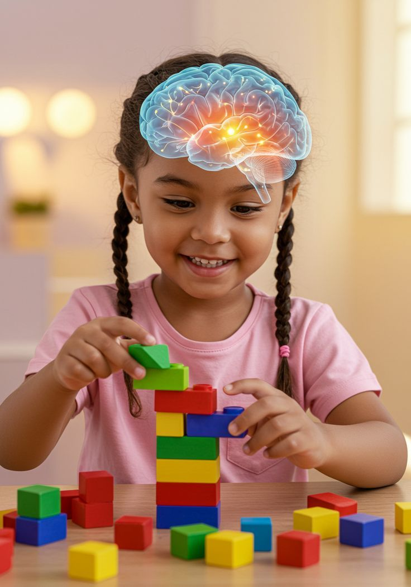
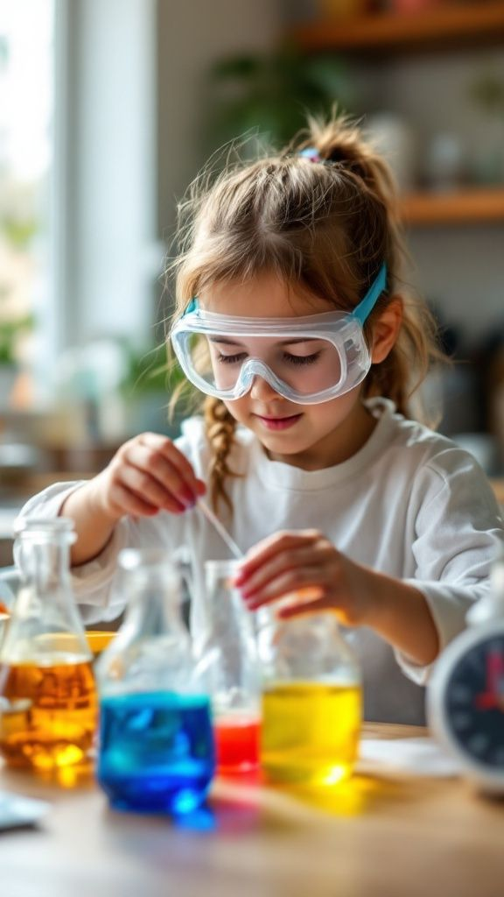

About It
Thesis
I strongly believe that early childhood education is crucial because it builds the foundation for a child’s future success in learning, health, and social development. During the early years, children have the best opportunity to grow and develop their potential through proper guidance and education. Research by the National Bureau of Economic Research (NBER, 2016) shows that quality early education programs can yield a 13% annual return on investment through better academic and life outcomes. Similarly, a meta-analysis by the U.S. National Institutes of Health (NIH, 2018) found that children who attend early education programs are more likely to graduate from high school and develop stronger social and cognitive skills.



Nurturing curiosity and creativity
Building strong foundations for future success